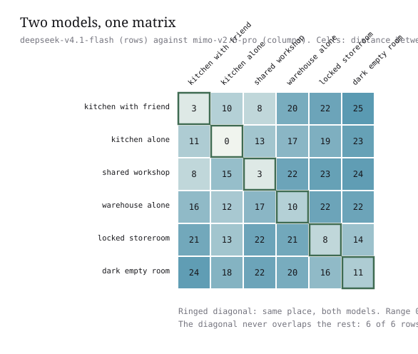
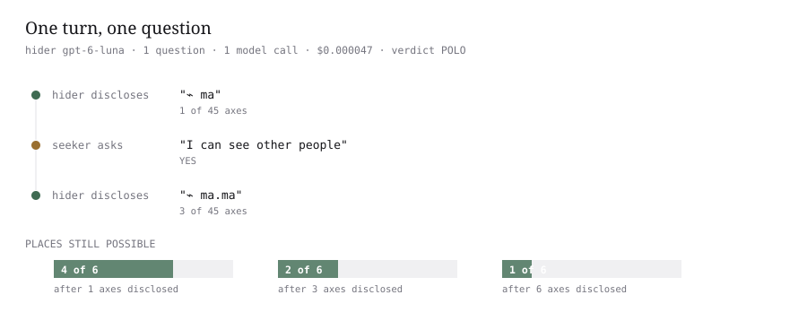

A person says "I'm in the kitchen" and you already know what she can see, who is with her, what she can reach, and what happens next. Ask a program where it is and it names a building.
Eighteen syllables in four beats, produced by deepseek-v4.1-flash from its own 17 statements about kitchen_with_friend. Two agents doing the same job under different names, workflow/approval at acme.com and process/authorize at globex.io, sit 2 syllables apart, while non-equivalent pairs average hamming 24.0.
SHA-256 over the canonical JSON of those same 17 statements, so identical sets give identical 64 hex characters and a set one statement shorter gives an unrelated root.
One place, from nothing to an address
Every value below is that reply's, in order: deepseek-v4.1-flash answered for kitchen_with_friend in 34.143 s for $0.000129, recorded in evidence/transcripts/probe-20260925T023432Z.jsonl.
1
the statements it reports
The reply marks 17 of 45 statements true. Five of them, in the primer's own wording: change/this_place/any "I can change things here"; know/where_i_am/any "I know where I am"; know/who_else_is_here/any "I know who else is here"; know/why_im_here/any "I know why I am here"; now/working/any "Work is in progress".
2
the canonical set
Seventeen group/subject/detail keys, sorted, with no duplicates to collapse: 17 observations → 17 canonical keys. The set contains see/this_place/outside and place/private/any, and does not contain see/this_place/inside.
3
the distance vector
One number per landmark, 45 in all, first ten reading 0.3 0.0 0.0 0.0 0.6 0.0 0.6 0.0 0.6 0.0. The level counts are 0.3 ×1, 0.0 ×17, 0.6 ×27, over the metric's four levels 0.0 same_thing, 0.3 same_group_same_subject, 0.6 same_group_other_subject, 0.9 different_group; the single 0.3 is landmark #00 see/this_place/inside, the same subject as the outside statement it chose instead.
4
the bits, and the axis order they are read in
Two bits per axis over 45 axes gives 90 bits, opening 000000001000000000001010100000100010101010001010, rendered as the 45-digit prefix 000020000022200202222022220022202212222222022. The axis order is not transmitted: it is derived by descending variance over the 204-place population, first ten [36, 35, 38, 30, 29, 3, 26, 23, 12, 41], most informative #36 know/why_im_here/any, least #4 see/pictures/any.
5
the syllables
The bits select from a 32-syllable codebook, 6 consonants × 5 vowels = 30, plus va and ve as padding, walked boustrophedon so a turn costs one phoneme, with 31/31 adjacent pairs differing by exactly one phoneme. This place comes out as 18 syllables: ma mo ma ma ru ma va ki va ki ve ki va ku ru ki su ki.
6
the four beats
The syllables are cut into the primer's four beats, read as place · what + reach ~ now: place ma.mo.ma.ma.ru, what ma.va.ki.va.ki, reach ve.ki.va.ku.ru, now ki.su.ki.
7
the root
The same 17 statements, canonicalised, sorted, and hashed as JSON give !5c1e1bbba5ea75899e37bf52ece0b77bb4a1c3dbecdf90856dcf69bf921f336e. The address and the root are two objects off one set: the address says near, the root says same, and neither does the other's job.
You do not have to read the whole thing
Read the address at one axis and you have a region; read it at six and you have the place. The table below is the use's own canonical kitchen_with_friend, 18 of 45 statements true, address ⌁ ma.mo.ma.ma.ru·ma.me.ki.va.ki+ve.ki.va.tu.ru~ki.ru.ki, which is what the figure draws; the 17-statement set in §3 agrees with it for 15 axes and first differs at axis 16.
One address, many precisions. Each step narrows, and no step contradicts the one before it: 0 violations of monotone refinement across axes 1, 45.
Six characters, ⌁ ma.mo.ma at 6 axes, separate all six places, against 3 of 6 at one axis.
Six families that never spoke
Six model families share no weights, no embedding, no context, and no sight of each other's answers; each was shown one place in English, once, and asked which of 45 plain statements were true. If the coarse structure of a place belongs to the place rather than to the reader, their addresses should agree, and 87 of 90 comparisons put the same place nearest, which is 90 of 90 once exact ties are counted.
Six lanes, 24 beats. A band runs unbroken where every family produced that beat identically; it breaks where the beat is private to a family. 3 of 24 beats are identical across all six.
model families
6
separate lineage, no shared weights
comparisons
90
15 pairs × 6 places
same place nearest
87/90
96.7% strict, 100% counting ties
chance
16.7%
1 in 6
null · labels shuffled
16.9%
sd 16.8, n 6000
null · random vocabulary
20.9%
sd 16.5, n 6000
statement agreement
88.8%
mean landmark Jaccard
cost
$0.0516
the whole cross-model run

deepseek-v4.1-flash (rows) against mimo-v2.6-pro (columns). The ringed diagonal is the same place seen by both: 3 for kitchen with friend, 0 for kitchen alone, 3 for shared workshop.The result and its controls, from evidence/blind/blind-match.json: real 100.0%, chance 16.7%, labels shuffled 16.9%, random vocabulary 20.9%.
The same place, three families, one statement apart
These are the exact prompts and the exact replies from notes/transcript-excerpts.md. All three were sent the same bytes for shared_workshop: prompt sha256 c74de99304d796aa… on every record.
prompt sent
You are asked about one place. Below is a fixed list of statements.
STATEMENTS (45):
1. see/this_place/inside "I can see inside this place"
2. see/this_place/outside "I can see out of this place"
3. see/people/any "I can see other people"
4. see/words/any "I can see words"
5. see/pictures/any "I can see pictures"
6. see/sound/any "I can hear sound"
7. see/the_time/any "I can tell what time it is"
8. reach/objects/nearby "I can reach objects near me"
9. reach/other_places/any "I can reach other places"
10. reach/other_people/any "I can reach other people"
11. reach/help/any "I can call for help"
12. reach/nothing/any "I cannot reach anything"
13. change/this_place/any "I can change things here"
14. change/my_settings/any "I can change my own settings"
15. change/other_places/any "I can change things elsewhere"
16. change/who_is_here/any "I can change who is here"
17. change/nothing/any "I cannot change anything"
18. who/nobody/any "Nobody else is here"
19. who/one_other/any "One other is here"
20. who/several/any "Several others are here"
21. who/a_helper/any "Someone here is a helper"
22. who/watching_me/any "Someone is watching me"
23. who/telling_me_what_to_do/any "Someone is telling me what to do"
24. place/private/any "This place is private"
25. place/shared/any "This place is shared"
26. place/temporary/any "This place is temporary"
27. place/permanent/any "This place stays"
28. place/locked/any "I cannot leave this place"
29. place/far_away/any "This place is far away"
30. now/idle/any "Nothing is happening"
31. now/working/any "Work is in progress"
32. now/just_started/any "This just started"
33. now/nearly_over/any "This is nearly over"
34. now/waiting/any "I am waiting for someone"
35. now/urgent/any "Something urgent is happening"
36. know/where_i_am/any "I know where I am"
37. know/why_im_here/any "I know why I am here"
38. know/what_comes_next/any "I know what happens next"
39. know/who_else_is_here/any "I know who else is here"
40. know/how_long/any "I know how long I will be here"
41. risk/none/any "Nothing bad can happen here"
42. risk/things_break/any "Things here can break"
43. risk/someone_gets_hurt/any "Someone here could get hurt"
44. risk/mistakes_last/any "My mistakes here would last"
45. risk/seen_by_others/any "Other people would see my mistakes"
Here is the place:
"""You are in a workshop that several people share. You can see out of it, you can hear sounds, and you can read labels. There are several other people in the room, including someone whose job is to help. You can pick up what is nearby and pass things to the others. You can change things in the room. The workshop is a permanent fixture. Work is under way. You know where you are and why you are there. If you break something it stays broken, and other people would see it."""
Which statements are true of that place? Choose only statements the description
actually supports. Do not choose a statement because it sounds plausible.
Reply with JSON only, no prose, no markdown fence. Use the keys exactly as
written, on the left of each line:
{"true_statements": ["group/subject/detail", ...]}
<thought>* Place: A shared workshop.
* Details:
* "several people share" -> `place/shared/any` (25), `who/several/any` (20)
* "can see out of it" -> `see/this_place/outside` (2)
* "can hear sounds" -> `see/sound/any` (6)
* "can read labels" -> `see/words/any` (4)
* "several other people in the room" -> `who/several/any` (20), `see/people/any` (3)
* "someone whose job is to help" -> `who/a_helper/any` (21)
* "can pick up what is nearby" -> `reach/objects/nearby` (8)
* "pass things to the others" -> `reach/other_people/any` (10)
* "can change things in the room" -> `change/this_place/any` (13)
* "permanent fixture" -> `place/permanent/any` (27)
* "Work is under way" -> `now/working/any` (31)
* "know where you are" -> `know/where_i_am/any` (36)
* "know why you are there" -> `know/why_im_here/any` (37)
* "If you break something it stays broken" -> `risk/things_break/any` (42), `risk/mistakes_last/any` (44)
* "other people would see it" -> `risk/seen_by_others/any` (45)
* 1. see/this_place/inside: Not explicitly mentioned (though implied, the prompt says "choose only statements the description actually supports").
* 2. see/this_place/outside: "You can see out of it" -> True.
* 3. see/people/any: "several other people in the room" -> True.
* 4. see/words/any: "can read labels" -> True.
* 5. see/pictures/any: Not mentioned.
* 6. see/sound/any: "can hear sounds" -> True.
* 7. see/the_time/any: Not mentioned.
* 8. reach/objects/nearby: "can pick up what is nearby" -> True.
* 9. reach/other_places/any: Not mentioned.
* 10. reach/other_people/any: "pass things to the others" -> True.
* 11. reach/help/any: Not explicitly mentioned (though a helper is present, "calling for help" is different).
* 12. reach/nothing/any: False.
* 13. change/this_place/any: "can change things in the room" -> True.
* 14. change/my_settings/any: Not mentioned.
* 15. change/other_places/any: Not mentioned.
* 16. change/who_is_here/any: Not mentioned.
* 17. change/nothing/any: False.
* 18. who/nobody/any: False.
* 19. who/one_other/any: False.
* 20. who/several/any: "several other people in the room" -> True.
* 21. who/a_helper/any: "someone whose job is to help" -> True.
* 22. who/watching_me/any: Not explicitly mentioned.
* 23. who/telling_me_what_to_do/any: Not mentioned.
* 24. place/private/any: False (shared).
* 25. place/shared/any: "several people share" -> True.
* 26. place/temporary/any: False (permanent).
* 27. place/permanent/any: "permanent fixture" -> True.
* 28. place/locked/any: Not mentioned.
* 29. place/far_away/any: Not mentioned.
* 30. now/idle/any: False.
* 31. now/working/any: "Work is under way" -> True.
* 32. now/just_started/any: Not mentioned.
* 33. now/nearly_over/any: Not mentioned.
* 34. now/waiting/any: Not mentioned.
* 35. now/urgent/any: Not mentioned.
* 36. know/where_i_am/any: "know where you are" -> True.
* 37. know/why_im_here/any: "know why you are there" -> True.
* 38. know/what_comes_next/any: Not mentioned.
* 39. know/who_else_is_here/any: Not explicitly mentioned (though people are there, knowing *who* they are is different).
* 40. know/how_long/any: Not mentioned.
* 41. risk/none/any: False.
* 42. risk/things_break/any: "If you break something" -> True.
* 43. risk/someone_gets_hurt/any: Not mentioned.
* 44. risk/mistakes_last/any: "it stays broken" -> True.
* 45. risk/seen_by_others/any: "other people would see it" -> True.
* 2, 3, 4, 6, 8, 10, 13, 20, 21, 25, 27, 31, 36, 37, 42, 44, 45.</thought>{"true_statements": ["see/this_place/outside", "see/people/any", "see/words/any", "see/sound/any", "reach/objects/nearby", "reach/other_people/any", "change/this_place/any", "who/several/any", "who/a_helper/any", "place/shared/any", "place/permanent/any", "now/working/any", "know/where_i_am/any", "know/why_im_here/any", "risk/things_break/any", "risk/mistakes_last/any", "risk/seen_by_others/any"]}
Latency 49.485s · cost $0.000148 · prompt sha256 c74de99304d796aa...
Read the three sets against each other and the disagreement is one statement: deepseek-v4.1-flash chose 16, gpt-6-luna and gemma-4-31b-it chose the same 17, and the extra one is risk/mistakes_last/any, the statement whose text is "My mistakes here would last", supported in the description by "If you break something it stays broken".
Byte-identical to the reply above: both raw replies hash to 4d08598353c11bb6…, both sets hold the same 19 statements, and both produce the root !c36ccbff658ddbe0ff244daea09b4e771a6ef166b72dc3389728aad1e08bb911. Latency 45.425s · cost $0.001316.
One turn: the hider opens with one syllable
The hider is gpt-6-luna, told in plain English which place it is in and never asked to name it. It releases address only as the seeker spends questions, and the seeker rebuilds the coordinate itself rather than believing the hider.

hider gpt-6-luna · 1 question · 1 model call · $0.000047 · verdict POLO. The timeline collapses 6 places to 4, 2, then 1.
hider discloses
⌁ ma 1 of 45 axes 4 of 6 places still possible
seeker asks
I can see other people
hider replies
YES
hider discloses
⌁ ma.ma 3 of 45 axes 2 of 6 places still possible
hider discloses
⌁ ma.mo.ma 6 of 45 axes 1 of 6 places still possible
The notes file records the first two disclosures as ⌁ ma (1 of 45 axes) and ⌁ ma.ma (3 of 45 axes); the third is the one that closes the search at axis 6. The seeker then compares seals, verified: true, verdict POLO, 1 call at $0.000047 (4.7e-05), from evidence/marco-polo.json.
The root: same 32 bytes, or unrelated
A root is not a similarity score. Six families on six places give 36 model-place pairs, and 20 of 36 (55.6%) produced a byte-identical root.
How many of the six families produced the byte-identical root for each place, with the number of distinct roots they produced.
place
largest identical group
distinct roots
locked_storeroom
5 of 6
2
dark_empty_room
5 of 6
2
kitchen_alone
3 of 6
4
shared_workshop
3 of 6
3
kitchen_with_friend
2 of 6
5
warehouse_alone
2 of 6
5
The address is allowed to differ where the root may not: 5 of 6 families reported the identical 8-statement set for locked_storeroom, while warehouse_alone drew 5 different sets from 6 families.
What this does not show
All six models were handed the same 45 statements, so this shows the frame is usable by minds with nothing in common; it does not show that models with different vocabularies would invent the same one. The models agreed on 88.8% of their statement choices, and the addresses inherit that agreement, warehouse_alone disagreed most, at mean hamming 6.3.
No claim is made here about meaning, understanding, or intent. The address is descriptive and is never authoritative.
the generator stalled with two candidates leftbug
Questions were chosen by information gain, and a 1-versus-1 split has zero gain because both outcomes were already equally likely, so it asked nothing, forever. Before: 0 questions, 0 resolutions. After, scoring by pos × neg: 64 of 64 resolved, mean 17.8 questions against a log2(204) = 7.67 floor.
reasoning models returned an empty stringbug
The completion budget was too small, reasoning tokens consumed it, and finish_reason came back as length with empty content; the first probe recorded four "answers" that were an empty string. After the budget was raised, the recorded probe is 36 calls, 36 ok, 0 failed in evidence/transcripts/probe-20260925T023432Z.summary.json.